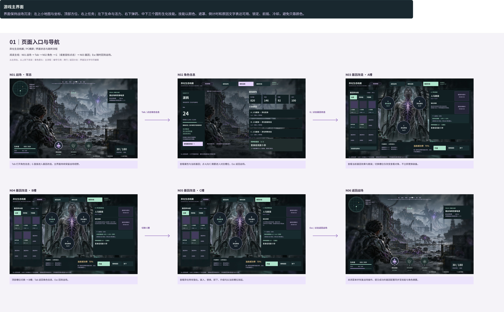
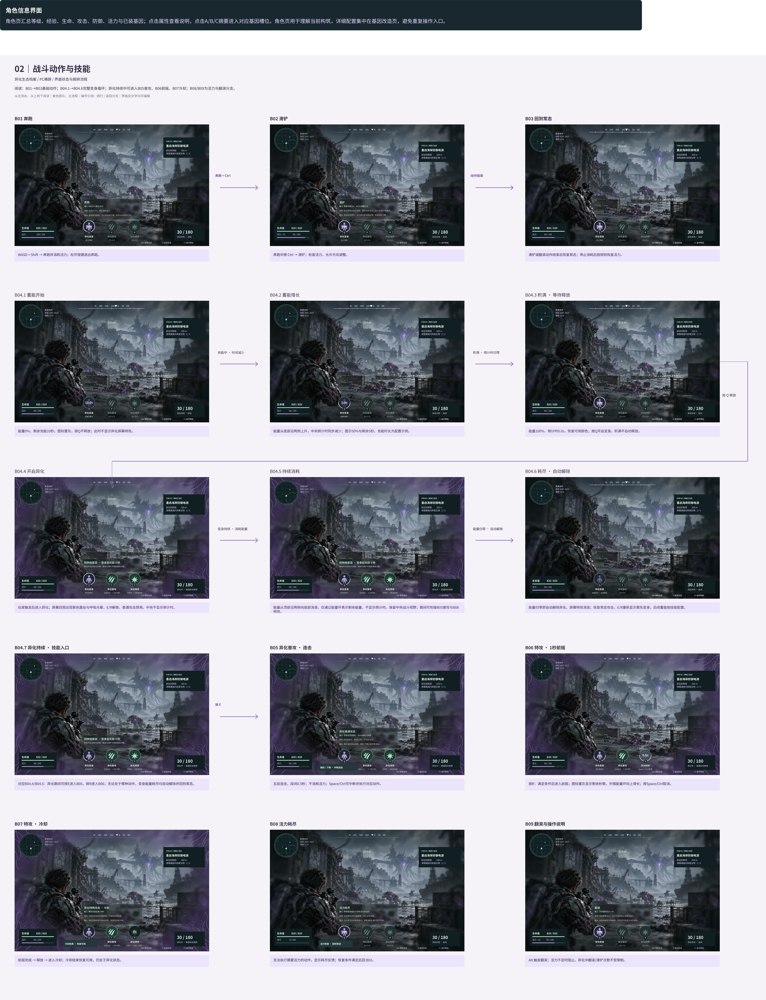
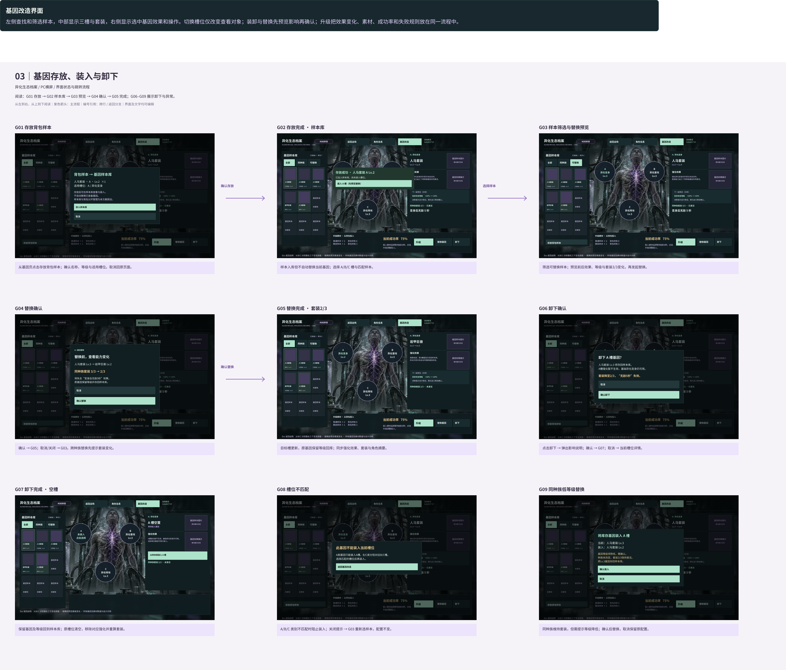
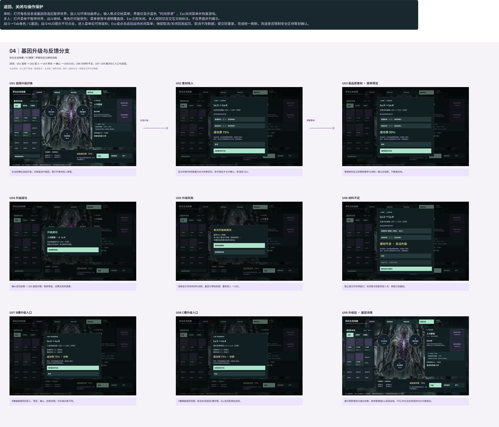

N01 战场 · 常态
Tab 打开角色信息；G 直接进入基因改造。主界面持续保留战场视野。
交互界面及流程
ALIEN INVASION
战斗动作、技能状态与基因改造的界面流程。
查看 Figma 源文件
阅读主线：N01 战场 → Tab → N02 角色 → G （或者鼠标点击）→ N03 基因；Esc 随时回到战场。
Tab 打开角色信息；G 直接进入基因改造。主界面持续保留战场视野。
查看属性与当前基因；点 A/B/C 摘要进入对应槽位，Esc 返回战场。
查看当前基因效果与套装；切换槽位仅改变查看对象，不立即更换装备。
顶部槽位切换 → B槽；Tab 返回角色信息，Esc 回到战场。
查看异化特攻强化。装入、替换、卸下、升级均从当前槽位发起。
关闭菜单并恢复战场操作。提交成功的基因配置同步至技能与角色摘要。

阅读：B01→B03基础动作；B04.1→B04.6完整变身循环；异化持续中可进入B05普攻、B06前摇、B07冷却；B08/B09为活力与翻滚分支。
WASD + Shift → 奔跑并消耗活力；松开按键退出奔跑。
奔跑中按 Ctrl → 滑铲；检查活力，允许方向调整。
滑铲或翻滚动作结束后恢复常态；停止消耗后按规则恢复活力。
对应B04.4/B04.5：异化期间可按E进入B05，按R进入B06；无论处于哪种动作，变身能量耗尽均自动解除并回到常态。
五段连击，段间0.5秒；不消耗活力；Space/Ctrl可中断并执行对应动作。
按R：满足条件后进入前摇；图标置灰显示剩余秒数，外围能量环向上增长；按Space/Ctrl取消。
前摇完成 → 释放 → 进入冷却；冷却结束恢复可用，仍处于异化状态。
无法执行需要活力的动作，显示耗尽反馈；恢复条件满足后回 B03。
Alt 触发翻滚；活力不足时阻止。异化中翻滚/滑铲次数不受限制。
能量0%，剩余充能10秒。图标置灰，按Q不释放；此时不显示异化屏幕特效。
能量从底部沿两侧上升，中央倒计时同步减少；图示50%与剩余5秒。充能时长为配置示例。
能量100%、倒计时0.0s，恢复可用颜色；按Q开启变身。积满不自动释放。
玩家触发后进入异化；屏幕四周出现紫色菌丝与呼吸光晕，E/R解锁，普通攻击禁用。中央不显示倒计时。
能量从顶部沿两侧向底部消退，仅通过能量环表示剩余能量，不显示倒计时。保留中央战斗视野；期间可衔接B05普攻与B06特攻。
能量归零即自动解除异化、屏幕特效消退；恢复常态攻击，E/R重新显示需先变身。后续蓄能按技能配置。

阅读：G01 存放 → G02 样本库 → G03 预览 → G04 确认 → G05 完成；G06–G09 展示卸下与异常。
从基因页点击存放背包样本；确认名称、等级与适用槽位。取消回原页面。
样本入库但不自动替换当前基因；选择 A/B/C 槽与匹配样本。
筛选可替换样本；预览前后效果、等级与套装3/3变化，再发起替换。
确认 → G05；取消/关闭 → G03。跨种族替换先提示套装变化。
目标槽更新，原基因保留等级回库；同步强化效果、套装与角色摘要。
点击卸下 → 弹出影响说明；确认 → G07；取消 → 当前槽位详情。
保留基因及等级回到样本库；原槽位清空，移除对应强化并重算套装。
A/B/C 类别不匹配时阻止装入；关闭提示 → G03 重新选样本，配置不变。
同种族维持套装，但需提示等级降低；确认后替换，取消保留原配置。

阅读：U01 选择 → U02 投入 → U03 预览 → 确认 → U04/U05；U06 为材料不足，U07–U09 展示B/C入口与返回。
在当前槽位发起升级；先保留选中基因，再打开素材投入弹窗。
显示所需/持有数量与本次效果变化；条件满足才允许确认。取消回 U01。
替换素材后立即更新概率与消耗；确认后结算，不重复扣除。
确认成功结果 → U09 基因详情；刷新等级、效果及角色摘要。
清晰显示失败和材料消耗，基因与等级保留；重新投入 → U02。
阻止提交并标明缺口；关闭提示回素材投入页，保留已选基因。
B槽遵循相同的投入、预览、确认、结果流程；仅升级对象不同。
C槽遵循相同流程；取消关闭返回C槽详情，Esc关闭菜单回战场。
展示更新等级与强化效果；继续管理或Esc返回战场。75%/90%及失败规则均为方案假设。
